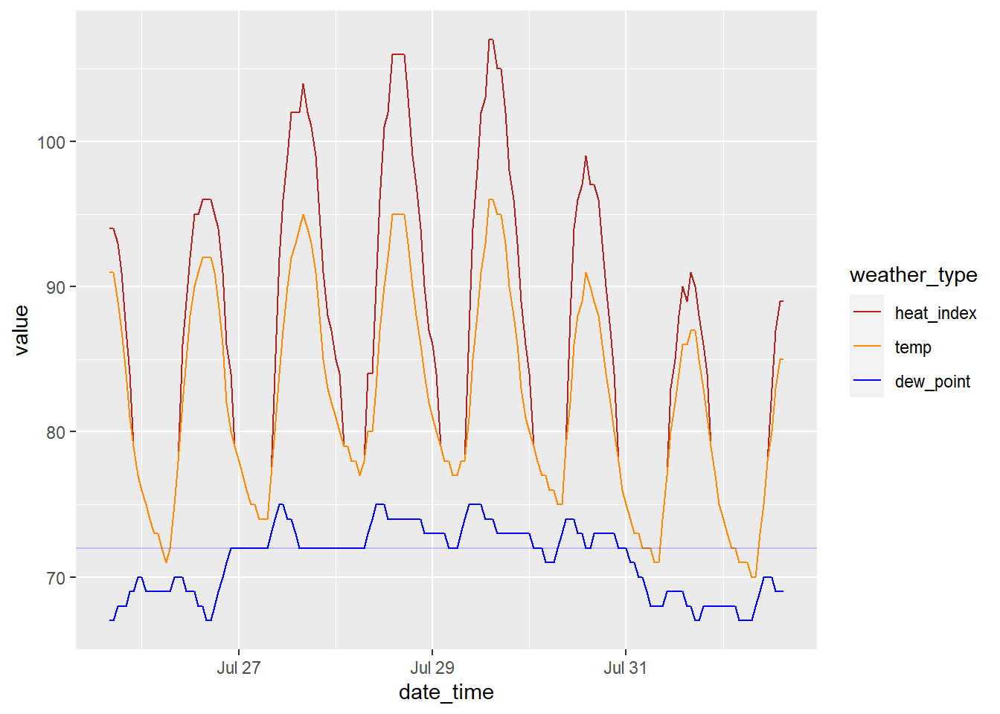
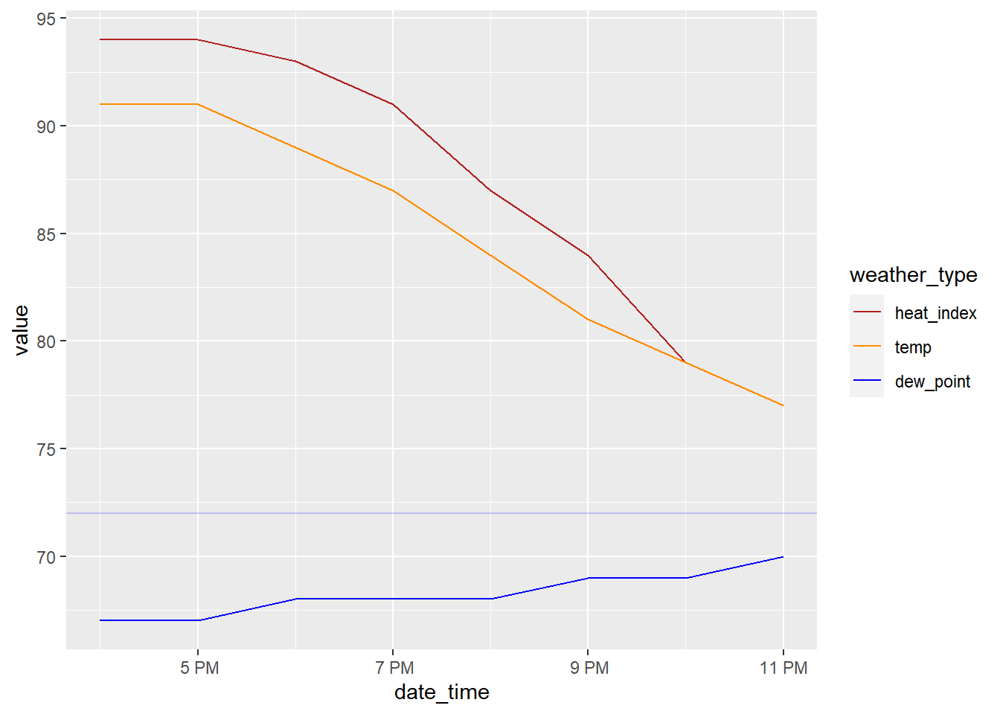
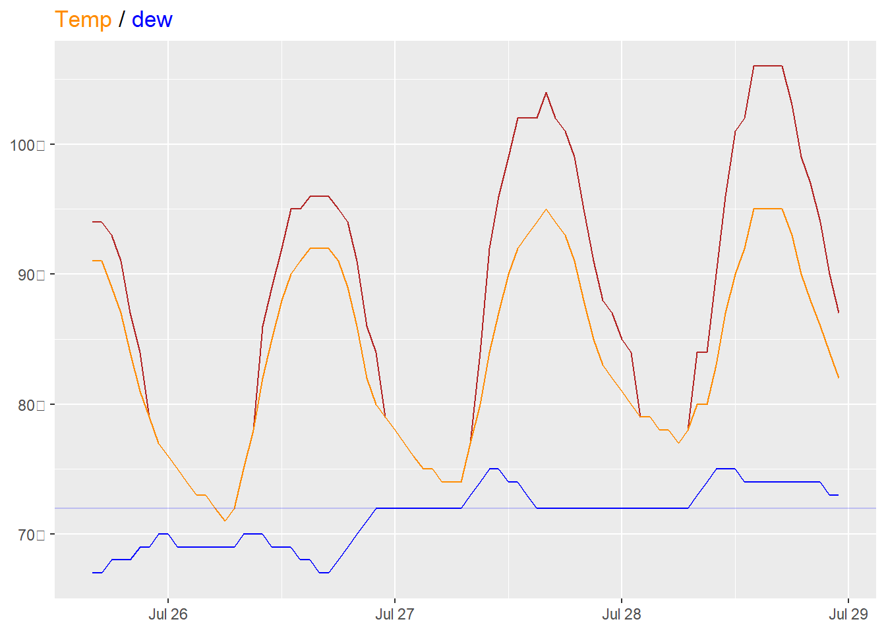
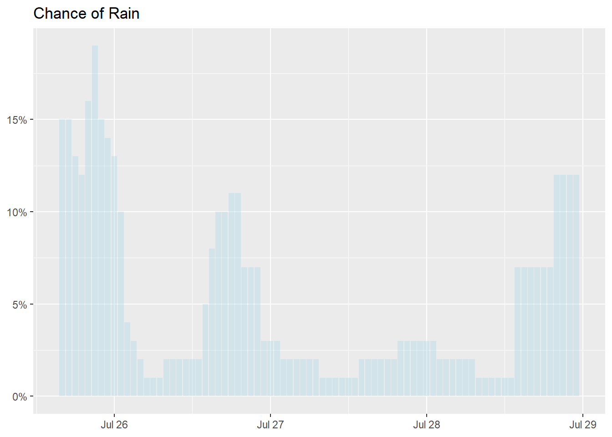
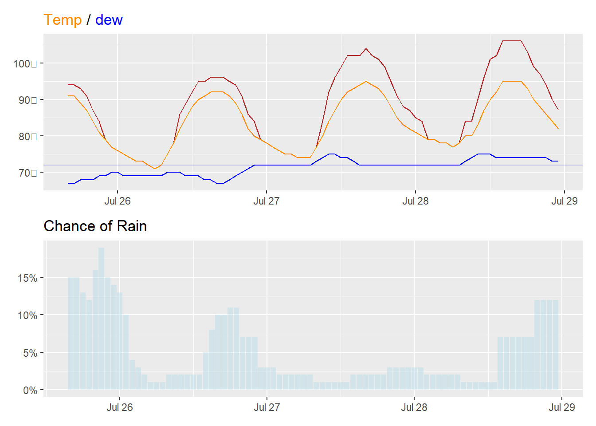

library(tidyverse)
library(xml2)
library(patchwork)
library(ggtext)
library(jsonlite)weather_and_xml
library packages
load data
- https://www.weather.gov/
- limit by locale
- https://forecast.weather.gov/MapClick.php?textField1=36&textField2=-78.9
- find “hourly weather forecast”
- XML output: https://forecast.weather.gov/MapClick.php?lat=36&lon=-78.9&FcstType=digitalDWML
weather.gov API
https://www.weather.gov/documentation/services-web-api my x,y coords: https://api.weather.gov/points/36,-78.9 # get office and x and y my forcast: https://api.weather.gov/gridpoints/RAH/64,66/forecast
my_df <- xml2::read_xml("https://forecast.weather.gov/MapClick.php?lat=36&lon=-78.9&FcstType=digitalDWML")Parse XML
my_temperature <- my_df %>%
xml_child("data") %>%
xml_child("parameters") %>%
xml_child("temperature") %>%
# xml_length()
# xml_siblings()
xml_children() %>%
xml_integer()
my_temperature [1] 67 67 68 68 68 69 69 70 70 69 69 69 69 69 69 69 70 70 70 69 69 69 68 68 67
[26] 67 68 69 70 71 72 72 72 72 72 72 72 72 72 72 73 74 75 75 74 74 73 72 72 72
[51] 72 72 72 72 72 72 72 72 72 72 72 72 72 72 73 74 75 75 75 74 74 74 74 74 74
[76] 74 74 74 73 73 73 73 73 73 72 72 72 73 74 75 75 75 75 74 74 74 73 73 73 73
[101] 73 73 73 73 73 72 72 72 71 71 71 72 73 74 74 74 73 73 72 72 73 73 73 73 73
[126] 73 72 72 72 71 71 70 70 69 68 68 68 68 69 69 69 69 69 68 68 67 67 68 68 68
[151] 68 68 68 68 68 68 67 67 67 67 68 69 70 70 70 69 69 69tibble(my_temperature)# A tibble: 168 × 1
my_temperature
<int>
1 67
2 67
3 68
4 68
5 68
6 69
7 69
8 70
9 70
10 69
# ℹ 158 more rowsmy_df %>%
xml_child("data") %>%
xml_child("parameters") %>%
xml_child("temperature") %>%
# xml_child("wind-speed")
xml_attrs("dew point") type time-layout
"dew point" "k-p1h-n1-0" # my_df %>%
# xml_structure()
# my_df %>%
# xml_child("data") %>%
# xml_child("parameters") %>%
# xml_child("temperature") %>%
# xml_contents()
start_time <- my_df %>%
xml_child("data") %>%
# xml_child("time-layout")
xml_find_all("//start-valid-time") %>%
xml_text()
heat_index <- my_df %>%
xml_find_all("//temperature[@type='heat index']") %>%
xml_children() %>%
xml_integer()
# probability-of-precipitation type="floating"
rain_chance <- my_df %>%
xml_find_all("//probability-of-precipitation[@type='floating']") %>%
xml_children() %>%
xml_integer()
dew_point <- my_df %>%
xml_find_all("//temperature[@type='dew point']") %>%
xml_children() %>%
xml_integer()
temp <- my_df %>%
xml_find_all("//temperature[@type='hourly']") %>%
xml_children() %>%
xml_integer()my_weather_summary <- tibble(date_time = force_tz(ymd_hms(start_time),
tzone = "America/New_York")
%m-% hours(4),
temp, heat_index,
rain_chance, dew_point)
my_weather_summary# A tibble: 168 × 5
date_time temp heat_index rain_chance dew_point
<dttm> <int> <int> <int> <int>
1 2023-07-25 16:00:00 91 94 15 67
2 2023-07-25 17:00:00 91 94 15 67
3 2023-07-25 18:00:00 89 93 13 68
4 2023-07-25 19:00:00 87 91 12 68
5 2023-07-25 20:00:00 84 87 16 68
6 2023-07-25 21:00:00 81 84 19 69
7 2023-07-25 22:00:00 79 79 15 69
8 2023-07-25 23:00:00 77 77 14 70
9 2023-07-26 00:00:00 76 76 13 70
10 2023-07-26 01:00:00 75 75 10 69
# ℹ 158 more rowsViz
my_weather_summary %>%
pivot_longer(-date_time, names_to = "weather_type") %>%
filter(weather_type != "rain_chance") %>%
mutate(weather_type = factor(weather_type, levels = c("heat_index", "temp", "dew_point"))) %>%
ggplot(aes(date_time, value)) +
geom_line(aes(color = weather_type)) +
geom_hline(yintercept = 72, color = "blue", alpha = .2) +
scale_color_manual(values = c("firebrick", "darkorange", "blue"))
Day one
my_weather_summary |>
mutate(floor = as.Date(min(date_time)), .after = date_time) |>
mutate(floor = floor %m+% days(1)) |>
filter(date_time < floor) |>
select(-floor) |>
pivot_longer(-date_time, names_to = "weather_type") %>%
filter(weather_type != "rain_chance") %>%
mutate(weather_type = factor(weather_type, levels = c("heat_index", "temp", "dew_point"))) %>%
ggplot(aes(date_time, value)) +
geom_line(aes(color = weather_type)) +
geom_hline(yintercept = 72, color = "blue", alpha = .2) +
scale_color_manual(values = c("firebrick", "darkorange", "blue")) +
scale_x_datetime(date_labels = "%l %p",
date_breaks = "2 hours")
Day one through five
plot_temp_dew <- my_weather_summary |>
mutate(ceiling = as.Date(min(date_time)), .after = date_time) |>
mutate(ceiling = ceiling %m+% days(4)) |>
filter(date_time < ceiling) |>
select(-ceiling) |>
pivot_longer(-date_time, names_to = "weather_type") %>%
filter(weather_type != "rain_chance") %>%
mutate(weather_type = factor(weather_type, levels = c("heat_index", "temp", "dew_point"))) %>%
ggplot(aes(date_time, value)) +
geom_line(aes(color = weather_type), show.legend = FALSE) +
geom_hline(yintercept = 72, color = "blue", alpha = .2) +
scale_color_manual(values = c("firebrick", "darkorange", "blue")) +
scale_y_continuous(labels = function(x) paste0(x, expression("℉"))) +
labs(x = NULL, y = NULL,
title = "<span style='color:darkorange'>Temp</span> / <span style='color:blue'>dew</span>") +
theme(plot.title = element_markdown())
plot_temp_dew
Chance of Rain
plot_chance_rain <- my_weather_summary |>
mutate(ceiling = as.Date(min(date_time))) |>
mutate(ceiling = ceiling %m+% days(4)) |>
mutate(rain_chance = rain_chance / 100) |>
filter(date_time < ceiling) |>
ggplot(aes(date_time, rain_chance)) +
geom_col(fill = "lightblue", alpha = .4) +
scale_y_continuous(labels = scales::percent) +
labs(y = NULL, x = NULL, title = "Chance of Rain")
plot_chance_rain
foo
plot_temp_dew / plot_chance_rain
JSON
# my_json <- jsonlite::read_json("https://api.weather.gov/gridpoints/RAH/64,66/forecast?units=us")
# my_json <- jsonlite::read_json("https://api.weather.gov/gridpoints/RAH/64,66/forecast/hourly?units=us")
# my_json
# my_json <- fromJSON("https://api.weather.gov/gridpoints/RAH/64,66/forecast?units=us")
# temp_data <- my_json$properties$periods[c("name", "temperature")]
# temp_df <- as.data.frame(temp_data)
my_json <- fromJSON("https://api.weather.gov/gridpoints/RAH/64,68/forecast/hourly?units=us")
# fromJSON("https://api.weather.gov/gridpoints/RAH/63,68/forecast/hourly?units=us")
my_dew_df <- my_json$properties$periods$dewpoint |>
janitor::clean_names() |>
as_tibble() |>
rename(dew_unit_code = unit_code) |>
rename(dew_point = value) |>
mutate(dew_point_F = (dew_point * 1.8 + 32)) # °C × 9/5) + 32
my_dew_df# A tibble: 156 × 3
dew_unit_code dew_point dew_point_F
<chr> <dbl> <dbl>
1 wmoUnit:degC 19.4 67
2 wmoUnit:degC 19.4 67
3 wmoUnit:degC 19.4 67
4 wmoUnit:degC 19.4 67
5 wmoUnit:degC 20 68
6 wmoUnit:degC 20.6 69
7 wmoUnit:degC 20.6 69
8 wmoUnit:degC 20.6 69
9 wmoUnit:degC 20.6 69
10 wmoUnit:degC 20.6 69
# ℹ 146 more rowsmy_precip_df <- my_json$properties$periods$probabilityOfPrecipitation |>
janitor::clean_names() |>
as_tibble() |>
rename(precip_unit = unit_code) |>
rename(precip = value)
my_precip_df# A tibble: 156 × 2
precip_unit precip
<chr> <int>
1 wmoUnit:percent 15
2 wmoUnit:percent 15
3 wmoUnit:percent 13
4 wmoUnit:percent 13
5 wmoUnit:percent 16
6 wmoUnit:percent 20
7 wmoUnit:percent 15
8 wmoUnit:percent 14
9 wmoUnit:percent 12
10 wmoUnit:percent 10
# ℹ 146 more rowstemp_df <- my_json$properties$periods[c("startTime", "temperature", "temperatureUnit")] |>
as_tibble() |>
janitor::clean_names() |>
mutate(start_time = force_tz(ymd_hms(start_time),
tzone = "America/New_York")
%m-% hours(4))
# mutate(start_time = lubridate::ymd_hms(start_time))
temp_df |>
bind_cols(my_dew_df) |>
bind_cols(my_precip_df)# A tibble: 156 × 8
start_time temperature temperature_unit dew_unit_code dew_point
<dttm> <int> <chr> <chr> <dbl>
1 2023-07-25 16:00:00 91 F wmoUnit:degC 19.4
2 2023-07-25 17:00:00 91 F wmoUnit:degC 19.4
3 2023-07-25 18:00:00 89 F wmoUnit:degC 19.4
4 2023-07-25 19:00:00 87 F wmoUnit:degC 19.4
5 2023-07-25 20:00:00 84 F wmoUnit:degC 20
6 2023-07-25 21:00:00 80 F wmoUnit:degC 20.6
7 2023-07-25 22:00:00 78 F wmoUnit:degC 20.6
8 2023-07-25 23:00:00 77 F wmoUnit:degC 20.6
9 2023-07-26 00:00:00 75 F wmoUnit:degC 20.6
10 2023-07-26 01:00:00 74 F wmoUnit:degC 20.6
# ℹ 146 more rows
# ℹ 3 more variables: dew_point_F <dbl>, precip_unit <chr>, precip <int>OJS
Import data
mydata = FileAttachment('data/MapClick.xml').xml
mydataurl = await FileAttachment("https://forecast.weather.gov/MapClick.php?lat=36&lon=-78.9&FcstType=digitalDWML").url
response = await fetch(url)
responsexmlText = await response.text()
xmlTextparser = new xml2js.Parser({explicitArray: false})
data = await parser.parseStringPromise(xmlText)
table = aq.from(data.dwml.data.parameters.temperature)
table.view()url2 = 'https://api.weather.gov/gridpoints/RAH/64,68/forecast/hourly?units=us';
// fetch JSON
jsonData = fetch(url2)
.then(response => response.json());
jsonDatadataFrame = from(jsonData)
.pipe(
map(data => ({
validTime: data.properties.validTime,
temperature: data.properties.temperature.value,
windSpeed: data.properties.windSpeed.value,
precipitationProbability: data.properties.probabilityOfPrecipitation.value
}))
)
.toArray()
.then(dataArray => new DataFrame(dataArray));
dataFramelibraries
import { aq, op } from '@uwdata/arquero'
import { from } from 'rxjs';
import { map } from 'rxjs/operators';
import { DataFrame } from 'data-forge';
// import {d3-time-format}
// d3 = require("d3@6")
xml2js = require("https://bundle.run/xml2js@0.4.23")